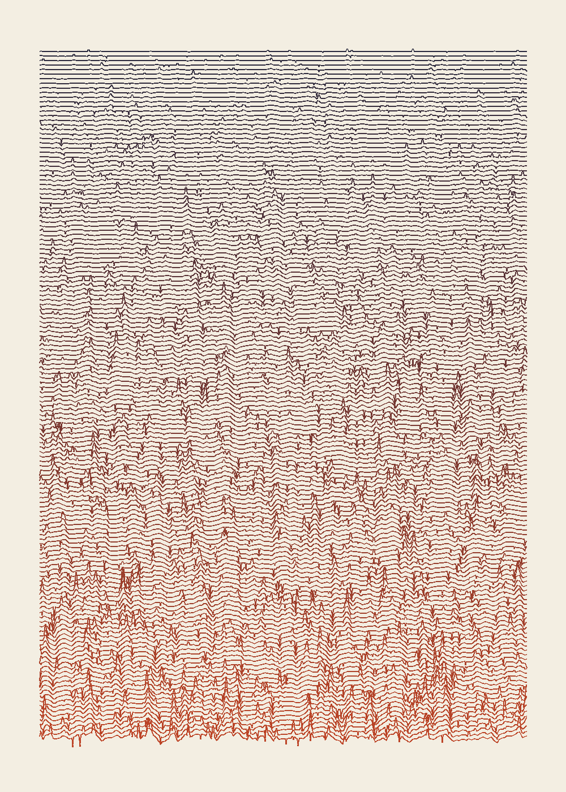

150 lines. The first is straight. Each one is a copy of the one above it: smoothed a little, now and then nudged, and every seventh shifted a step sideways. Nothing is drawn from a source; the only source is the previous line. The errors don't cancel, they pile up.
It looks like the cover of a well-known record, which I did not intend and cannot unsee. Code: works/2026-10-07j-copied-badly/make.py, seed 18.